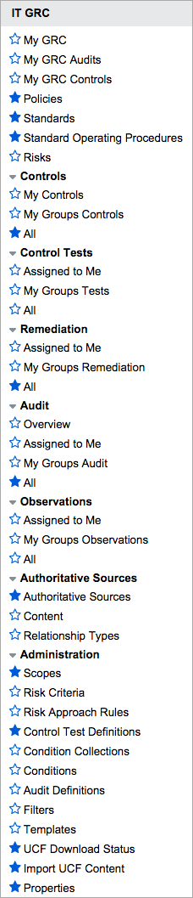

Governance, Risk, and Compliance
| |
Note: This article applies to Fuji and earlier releases. For more current information, see Governance, Risk, and Compliance (GRC) at http://docs.servicenow.com
The ServiceNow Wiki is no longer being updated. Visit http://docs.servicenow.com for the latest product documentation. |
Contents
1 Overview
The Governance, Risk, and Compliance (GRC) application supports:
- Downloading and importing UCF authority documents into GRC.
- Documenting policies and procedures.
- Defining and assessing risks.
- Defining controls based on policies and their associated risks.
- Generating audits and tests to ensure that controls are being followed.
- Generating remediation tasks to track corrective actions that are required.
| |
Note: The Core GRC Components [com.snc.governance_core] plugin includes components used by the Governance, Risk, and Compliance (GRC) [com.snc.governance] plugin. These components include GRC Risks, Risk Criteria, Remediation Tasks, Policies, Standards, and Standard Operating Procedures. The Core GRC Components [com.snc.governance_core] plugin does not include support for Authority Document management, Unified Compliance Framework (UCF) integration, Control management, Control testing, or Auditing Activities. To leverage these capabilities, install the Governance, Risk, and Compliance (GRC) [com.snc.governance] plugin. |
2 GRC Process
The GRC process involves these phases:
2.1 Documentation
The documentation phase involves creating controls for your Governance, Risk and Compliance audits. Users with the grc_admin role can import authority documents from an external standards provider, or create custom controls.
2.1.1 Authority Documents
An authority document is a document that defines the external standards, frameworks, or regulations that a process must use. These are stored as references, from which policies can be defined. Create your own authority documents or download and import the UCF authority documents you want into GRC.
2.1.2 Citations
The authority document can be broken up into citations that can be interrelated using configured relationships. In this way, not only can the authority document be viewed as a whole, but the relationships between different sections can be mapped to better record how the authority document is meant to be implemented.
The same relationship mechanism can be used to document relationships across authority documents. This is important because different sources address the same or similar controls and objectives.
2.1.3 Controls
A control is a process to mitigate risk, enforce a mandated policy statement, and address the directive of an authority document. The control may have one or many control tests associated with it. This ensures that the control is effective and provides continued compliance. Controls can also be directly associated with citations to map an organization's internal controls to those mandated by the authority document.
2.2 Policy Creation
A policy document defines an internal practice that processes must follow. The Policy [grc_policy] table extends Knowledge [kb_knowledge]. Each policy is stored in the knowledge base and can be accessed in the same way as any other published article.
To manage elements of the policy, the policy can be associated with:
- Entities managed.
- Authority documents with which it is designed to comply.
- Risks associated with failing to comply.
- Controls in place to enforce the policies and mitigate identified risks.
2.2.1 Policy Scope
Scope is the effective level to which a policy, standard, or SOP applies. This could refer to a location, business unit, or anything that is important to the organization. In versions prior to the Fuji release, these levels were called Entities.
2.3 Monitoring and Verification
Monitoring and verifying the GRC process involves validating controls and tests with audits and evaluating risks.
2.3.1 Risks
A risk is a definition of the possible consequence of failing to comply with a policy. Risks are rated based on risk criteria that can be used to calculate a risk approach. The risk approach calculation is based on risk approach rules that typically use the values contained in the Significance and Likelihood fields in the Risk Criteria [grc_risk_criteria] table. This table contains a Display value field to allow for text values and a weighting, which can be used to define the risk approach rules.
After the risks are defined, they can be associated with controls to identify how they are being mitigated.
2.3.2 Control Tests and Definitions
A control test definition determines how and when a control test is performed, including execution steps and expected results. Condition collections can be created with associated conditions to define advanced control test logic. Each time the control test is performed, a control test instance is generated as a task to be executed, according to the control test definition.
2.3.3 Audits
An audit definition establishes a set process for validating controls and control tests. From the definition, audit instances can be generated as a task to power the audit.
Once generated, audit instances can reference any existing evidence of compliance by associating previously executed control tests with the control test definitions that have been established in the audit.
During the audit process, audit observations can be recorded by the auditor to track the gathered information. The auditors can use these observations to create remediation tasks.
During the audit process, an administrator can create and assign remediation tasks that need to be performed before and during an audit. In addition, audit requirements associate citations to the audit, allowing auditors to track compliance or non-compliance with the original regulations.
If the latest evidence is not recent enough, click Execute Now in the Control Test Definition form to execute a control test instance. This action creates the control test instance and automatically associates it to the audit. The control test instance record also has the Generate from audit field populated with the audit number, so that it is clear that the test was created from an audit and not manually.
2.4 Reporting
GRC provides three reporting portals that deliver reports to specific users related to the GRC elements assigned to them or their groups.
3 Menus and Modules
|  |
|
{kind=link}
4 Activating Governance Risk and Compliance
Administrators can activate the Governance, Risk and Compliance plugin. Additional plugins are activated as needed. This plugin provides demonstration data.
| |
Note: The Core GRC Components [com.snc.governance_core] plugin includes components used by the Governance, Risk, and Compliance (GRC) [com.snc.governance] plugin. These components include GRC Risks, Risk Criteria, Remediation Tasks, Policies, Standards, and Standard Operating Procedures. The Core GRC Components [com.snc.governance_core] plugin does not include support for Authority Document management, Unified Compliance Framework (UCF) integration, Control management, Control testing, or Auditing Activities. To leverage these capabilities, install the Governance, Risk, and Compliance (GRC) [com.snc.governance] plugin. |
| Click the plus to expand instructions for activating a plugin. |
|---|
|
If you have the admin role, use the following steps to activate the plugin.
|
5 Enhancements
5.1 Fuji
- GRC supports the use of UCF authority documents in GRC authority documents, citations, and controls. Administrators use a dedicated interface to select and import specific authority documents that contain the guidance they need. GRC tracks UCF versions and enables administrators to view changes before importing a new version of a document. An approval process ensures that only those documents currently used by the organization for compliance are imported into GRC tables.
- A type of survey called an attestation allows an organization to evaluate its compliance with its policies. An attestation is created in a control test definition and sent to users who execute company policy or manage compliance standards. GRC gathers and displays results from each control test based on the configured scoring criteria. Administrators can create an assertion on the attestation that contains requirements, admonitions, or directions related to the questions, and then require recipients to certify that they have read and complied with the policy with a signature.
- Attestation scorecards display the responses from each survey by recipient, question, or category and provide yearly or quarterly comparisons. Scorecards are dynamically updated by the system.
- GRC provides reporting on compliance, controls, and audits. Audit reports are driven by database views, which enable reporting on joined tables. Three report portals deliver reports to specific users, by role, related to the GRC elements assigned to them or their groups.
- The system automatically generates calculated links between authority documents, citations, policies, and risks in any hierarchy you establish. This feature creates indirect links between GRC elements that update dynamically and enable the system to roll up results from control tests for reporting purposes.
- GRC automatically executes any control test definition associated with an audit definition when the audit instance is created.
5.2 Dublin
- Control test definitions support the use of certification filters and templates to define the scope and conditions for control tests. Templates enable an administrator to define attribute conditions for any table in ServiceNow.
- Demonstration data provided with the Dublin release enables customers to audit vendors for non-disclosure agreements (NDA). You can substitute filters and templates for the existing condition collection functionality, but you must create your own records. ServiceNow does not provide NDA demonstration data for the new elements.